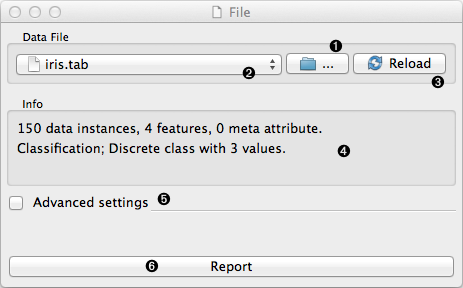
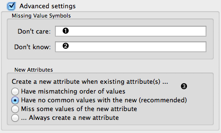
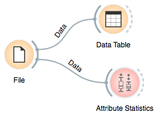

This is documentation for Orange 2.7. For the latest documentation, see Orange 3.
File¶
Reads attribute-value data from an input file.
Signals¶
- Inputs:
- (None)
- Outputs:
- Data
Attribute-valued data set read from the input file.
Description¶
File widget reads the input data file (data table with data instances) and sends the data set to its output channel. It maintains a history of most recently opened files. For convenience, the history also includes a directory with the sample data sets that come pre-installed with Orange.
The widget reads data from simple tab-delimited or comma-separated files, as well as files in Weka’s arrf format.
- Browse for a data file.
- Browse through previously opened data files, or load any of the sample data files.
- Reloads currently selected data file.
- Information on loaded data set (data set size, number and types of data features).
- Opens a sub-window with advanced settings.
- Adds a report on data set info (size, features).
Advanced Options¶
- Symbol for don’t care data entry.
- Symbol for don’t know data entry.
- Settings for treatment of feature names in the feature space of Orange.
Tab-delimited data file can include user defined symbols for undefined values. The symbols for “don’t care” and “don’t know” values can be specified in the corresponding edit lines. The default values for “don’t know” and “don’t care” depend upon format. Most users will use tab-delimited files: keep the field empty or put a question mark in there and that’s it. Most algorithms do not differ between don’t know and don’t care values, so consider them both to mean undefined.
Orange will usually treat the attributes with the same name but appearing in different files as the same attribute, so a classifier which uses the attribute “petal length” from the first will use the attribute of the same name from the second. In cases when attributes from different files just accidentally bear different names, one can instruct Orange to either always construct new attribute or construct them when they differ in their domains. Use the options on dealing with new attributes with great care (if at all).
Example¶
Most Orange workflows would probably start with the File widget. In the schema below, the widget is used to read the data that is sent to both Data Table widget and to widget that displays Attribute Statistics.
